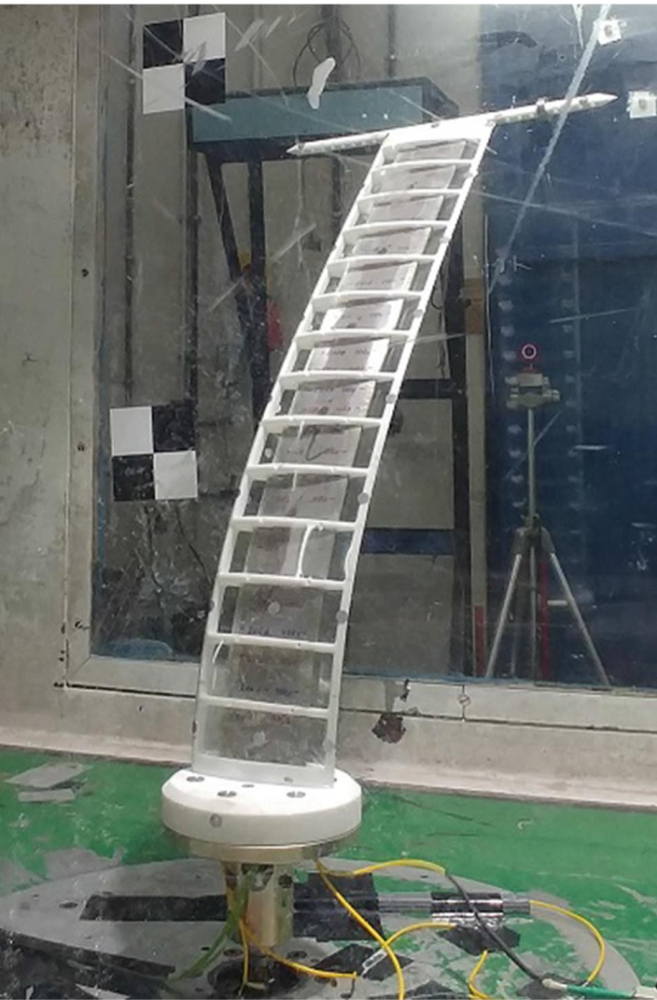
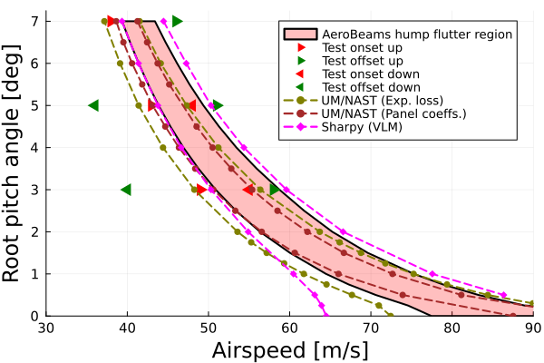
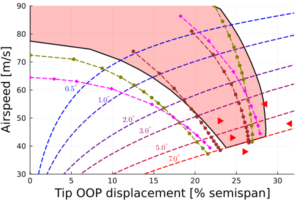

Flutter analysis of the Pazy wing
This example illustrates how to set up a flutter (eigen) analysis, using the Technion's Pazy wing benchmark. The sectional properties of the wing's spar and the aerodynamic tip loss function were defined by Riso and Cesnik. The data is publicly available at https://github.com/UM-A2SRL/AePW3-LDWG.

Pazy wing in the wind tunnel by Avin et al.
The code for this example is available here.
Problem setup
Let's begin by setting the variables of our problem. In this example we will analyze the flutter onset and offset boundaries of the clamped wing under several root pitch angles, defined by the array θRange.
using AeroBeams
# Pitch angle range [rad]
θRange = unique([vcat(0:0.25:1)...,vcat(1:0.5:7)...])
# Airspeed range [m/s]
URange = vcat(1e-3,1:1:120)
# Aerodynamic solver
aeroSolver = Indicial()
# Airfoil section
airfoil = deepcopy(FlatPlate)
# Flag for tip correction
hasTipCorrection = true
# Tip correction function type
tipLossType = "Exponential"
# Flag for upright position
upright = true
# Gravity
g = 0
# Flag for small angles approximation
smallAngles = true
# Fixed geometrical and discretization properties
nElem,L,chord,normSparPos = geometrical_properties_Pazy()
# Number of modes to track
nModes = 5
# Eigensolver method and minimum number of eigenvalues to be computed
eigenmethod = :krylovkit
nev = 90
# Initialize outputs
eigensols = Array{EigenSolution}(undef,length(θRange),length(URange))
tip_OOP = Array{Float64}(undef,length(θRange),length(URange))
freqsOsc = Array{Matrix{Float64}}(undef,length(θRange))
dampsOsc = Array{Matrix{Float64}}(undef,length(θRange))
freqsNonOsc = Array{Matrix{Float64}}(undef,length(θRange))
dampsNonOsc = Array{Matrix{Float64}}(undef,length(θRange))
flutterOnsetSpeeds = Array{Vector{Float64}}(undef,length(θRange))
flutterOnsetFreqs = Array{Vector{Float64}}(undef,length(θRange))
flutterOnsetModes = Array{Vector{Int}}(undef,length(θRange))
flutterOnsetDisp = Array{Vector{Float64}}(undef,length(θRange))
flutterOffsetSpeeds = Array{Vector{Float64}}(undef,length(θRange))
flutterOffsetFreqs = Array{Vector{Float64}}(undef,length(θRange))
flutterOffsetModes = Array{Vector{Int}}(undef,length(θRange))
flutterOffsetDisp = Array{Vector{Float64}}(undef,length(θRange))Solving the problem
In the following loops, we create new model instances with the combination of pitch angle and airspeed, create and solve the eigenproblem, and then extract the outputs of interest. The model creation process is streamlined with the function create_Pazy, taking the appropriate inputs. Once the solutions for all airspeeds of each root pitch angle are found, we compute the flutter onset and offset speeds (if any), and the respective tip out-of-plane displacement of the wing for each vibration mode.
# Sweep root angle
for (i,θ) in enumerate(θRange)
# Initialize guess solution
x0 = zeros(0)
# Sweep airspeed
for (j,U) in enumerate(URange)
# Model
PazyWingFlutterPitchRange,_ = create_Pazy(aeroSolver=aeroSolver,airfoil=airfoil,hasTipCorrection=hasTipCorrection,tipLossType=tipLossType,upright=upright,pitchAngle=deg2rad(θ),airspeed=U,gravityVector=[0,0,-g],smallAngles=smallAngles)
# Create and solve problem
problem = create_EigenProblem(model=PazyWingFlutterPitchRange,eigenmethod=eigenmethod,nev=nev,x0=x0)
solve!(problem)
# Tip OOP displacement at midchord
states = problem.loadstepHistory.states
tipTwist = twist_angle(states[end][nElem].nodal.p2_b, outputUnit=:deg)
tip_OOP[i,j] = -(states[end][nElem].nodal.u2[1] - chord*(1/2-normSparPos)*sind(tipTwist))/L*100
# Eigensolution
eigensols[i,j] = problem.eigensolution
# Set initial guess solution for next iteration
x0 = problem.systemArrays.x
end
# Apply mode tracking
freqs,damps,_ = mode_tracking(eigensols[i,:])
rads2Hz!(freqs)
# Get frequencies and dampings of oscillatory and non-oscillatory modes
freqsOsc[i],dampsOsc[i],_ = filter_tracked_modes(freqs,damps; fmin=1e-1, fmax=150, maxTracks=nModes)
freqsNonOsc[i],dampsNonOsc[i],_ = filter_tracked_modes(freqs,damps; fmin=0, fmax=0)
# Flutter onset and offset speeds, frequencies and tip OOP displacements
flutterOnsetSpeeds[i],flutterOnsetFreqs[i],flutterOnsetModes[i],flutterOnsetDisp[i],flutterOffsetSpeeds[i],flutterOffsetFreqs[i],flutterOffsetModes[i],flutterOffsetDisp[i] = find_flutter(URange,freqsOsc[i],dampsOsc[i],tip_OOP[i,:])
endPost-processing
Post-processing begins by loading the reference experimental data by Drachinski et al. and numerical data by Riso & Cesnik, by Riso & Cesnik and of Sharpy.
# Load reference data
rootPitchVelUp = [3, 5, 7]
rootPitchVelDown = [3, 5]
flutterOnsetVelUp = [49, 43, 38]
flutterOffsetVelUp = [58, 51, 46]
flutterOnsetVelDown = [55, 48]
flutterOffsetVelDown = [40, 36]
flutterOnsetDispUp = [23, 24.5, 26]
flutterOnsetDispDown = [28.5, 31.5]
flutterBoundaryDisp_UMNAST = readdlm(pkgdir(AeroBeams)*"/test/referenceData/Pazy/flutterBoundaryDisp_UMNAST.txt")
flutterBoundaryPitch_UMNAST = readdlm(pkgdir(AeroBeams)*"/test/referenceData/Pazy/flutterBoundaryPitch_UMNAST.txt")
flutterBoundaryDisp_UMNAST_PanelCoeffs = readdlm(pkgdir(AeroBeams)*"/test/referenceData/Pazy/flutterBoundaryDisp_UMNAST_PanelCoeffs.txt")
flutterBoundaryPitch_UMNAST_PanelCoeffs = readdlm(pkgdir(AeroBeams)*"/test/referenceData/Pazy/flutterBoundaryPitch_UMNAST_PanelCoeffs.txt")
flutterBoundary_UVsPitch_Lambda0_Sharpy = readdlm(pkgdir(AeroBeams)*"/test/referenceData/sweptPazy/flutterBoundary_UVsPitch_Lambda0_Sharpy.txt")
flutterBoundary_dispVsU_Lambda0_Sharpy = readdlm(pkgdir(AeroBeams)*"/test/referenceData/sweptPazy/flutterBoundary_dispVsU_Lambda0_Sharpy.txt")The Pazy wing is known from the tests of Drachinski et al. to have a hump flutter mode, that is, a mode that becomes unstable over a certain region of airspeeds. The size of this region is dependent on the root pitch angle of the wing. Let us now plot the flutter boundaries of this hump mode. There is good agreement with the experimental data, but notice that to capture the hysterysis on the flutter onset and offset we would need an analysis more complex than an eigenvalue one. The UM/NAST data by Riso and Cesnik, Riso and Cesnik and the Sharpy results are also plotted for comparison.
ts = 10
fs = 16
lfs = 9
lw = 2
ms = 10
ms2 = 4
msw = 0
gr()
# Flutter onset and offset speeds vs root pitch angle
# Extract flutter onset and offset data for the hump mode
humpMode = 3
UfOn = Float64[]
UfOff = Float64[]
ufOn = Float64[]
ufOff = Float64[]
for i in eachindex(θRange)
for m in eachindex(flutterOnsetModes[i])
if flutterOnsetModes[i][m] == humpMode
push!(UfOn, flutterOnsetSpeeds[i][m])
push!(ufOn, flutterOnsetDisp[i][m])
break
end
end
for m in eachindex(flutterOffsetModes[i])
if flutterOffsetModes[i][m] == humpMode
push!(UfOff, flutterOffsetSpeeds[i][m])
push!(ufOff, flutterOffsetDisp[i][m])
break
end
end
end
# Flutter onset and offset speeds vs root pitch angle
plt1 = plot(xlabel="Airspeed [m/s]", ylabel="Root pitch angle [deg]", xlims=[30,90], ylims=[0,7.25], xticks=collect(30:10:90), yticks=collect(0:1:7), legend=:topright, tickfont=font(ts), guidefont=font(fs), legendfontsize=lfs)
plot!(Shape(vcat(UfOn,reverse(UfOff)),vcat(θRange,reverse(θRange))), fillcolor = plot_color(:red, 0.25), lw=lw, label="AeroBeams hump flutter region")
scatter!(flutterOnsetVelUp, rootPitchVelUp, shape=:rtriangle, mc=:red, ms=ms, msw=msw, label="Test onset up")
scatter!(flutterOffsetVelUp, rootPitchVelUp, shape=:rtriangle, mc=:green, ms=ms, msw=msw, label="Test offset up")
scatter!(flutterOnsetVelDown, rootPitchVelDown, shape=:ltriangle, mc=:red, ms=ms, msw=msw, label="Test onset down")
scatter!(flutterOffsetVelDown, rootPitchVelDown, shape=:ltriangle, mc=:green, ms=ms, msw=msw, label="Test offset down")
plot!(flutterBoundaryPitch_UMNAST[1,:], flutterBoundaryPitch_UMNAST[2,:], c=:olive, ls=:dash, lw=lw, marker=:circle, ms=ms2, msw=msw, label="UM/NAST (Exp. loss)")
plot!(flutterBoundaryPitch_UMNAST_PanelCoeffs[1,:], flutterBoundaryPitch_UMNAST_PanelCoeffs[2,:], c=:brown, ls=:dash, lw=lw, marker=:circle, ms=ms2, msw=msw, label="UM/NAST (Panel coeffs.)")
plot!(flutterBoundary_UVsPitch_Lambda0_Sharpy[1,1:19], flutterBoundary_UVsPitch_Lambda0_Sharpy[2,1:19], c=:magenta, ls=:dash, lw=lw, marker=:diamond, ms=ms2, msw=msw, label="Sharpy (VLM)")
# Flutter onset and offset speeds vs tip OOP displacement for varying root pitch angle
θ2plot = [0.5,1,2,3,5,7]
indθ2plot = findall(x -> any(isapprox(x, θ; atol=1e-10) for θ in θ2plot), θRange)
θcolors = cgrad([:blue, :red], length(θ2plot), categorical=true)
xθ = [ 5, 9, 12, 14, 16, 17.5]
yθ = [59, 55, 48, 44, 38, 34]
plt2 = plot(xlabel="Tip OOP displacement [% semispan]", ylabel="Airspeed [m/s]", xlims=[0,32], ylims=[30,90], xticks=collect(0:5:30), yticks=collect(30:10:90), legend=:bottomleft, tickfont=font(ts), guidefont=font(fs), legendfontsize=lfs)
plot!(Shape(vcat(ufOn,reverse(ufOff)),vcat(UfOn,reverse(UfOff))), fillcolor = plot_color(:red, 0.25), lw=lw, label=false)
for (n,ind) in enumerate(indθ2plot)
θ = θ2plot[n]
plot!(tip_OOP[ind,:], URange, c=θcolors[n], ls=:dash, lw=2, label=false)
annotate!([xθ[n]],[yθ[n]], text("\$$(round(θ2plot[n],digits=1)) ^\\circ\$", 10, :bottom, θcolors[n]))
end
scatter!(flutterOnsetDispUp, flutterOnsetVelUp, shape=:rtriangle, mc=:red, ms=ms, msw=msw, label=false)
scatter!(flutterOnsetDispDown, flutterOnsetVelDown, shape=:ltriangle, mc=:red, ms=ms, msw=msw, label=false)
plot!(flutterBoundaryDisp_UMNAST[1,:], flutterBoundaryDisp_UMNAST[2,:], c=:olive, ls=:dash, lw=lw, marker=:circle, ms=ms2, msw=msw, label=false)
plot!(flutterBoundaryDisp_UMNAST_PanelCoeffs[1,:], flutterBoundaryDisp_UMNAST_PanelCoeffs[2,:], c=:brown, ls=:dash, lw=lw, marker=:circle, ms=ms2, msw=msw, label=false)
plot!(flutterBoundary_dispVsU_Lambda0_Sharpy[1,:]*100,flutterBoundary_dispVsU_Lambda0_Sharpy[2,:], c=:magenta, ls=:dash, lw=lw, marker=:diamond, ms=ms2, msw=msw, label=false)

This page was generated using Literate.jl.